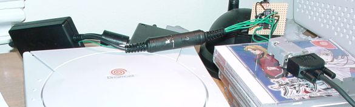

This page describes how to build an adaptor for the Dreamcast serial port
that will allow you to connect it to any computer using a standard 9-pin
DSUB connector. The main component is a MAX voltage converter, since the
Dreamcast serial port uses CMOS (3.3V) voltage levels, whereas normal RS232
uses +/-12V levels. If you are having trouble finding the MAX chip,
you may want to consider ordering it directlt from MAXIM, or failing
that from ELFA (stock no. 73-228-45).
Dominic Clifton informs me that
UK residents can get the chip from RS Electronics (+44 01536 201201), where
it has a part number of 1891469.
This page describes how to build an adaptor for the Dreamcast serial port
that will allow you to connect it to any computer using a standard 9-pin
DSUB connector. The main component is a MAX voltage converter, since the
Dreamcast serial port uses CMOS (3.3V) voltage levels, whereas normal RS232
uses +/-12V levels. If you are having trouble finding the MAX chip,
you may want to consider ordering it directlt from MAXIM, or failing
that from ELFA (stock no. 73-228-45).
Dominic Clifton informs me that
UK residents can get the chip from RS Electronics (+44 01536 201201), where
it has a part number of 1891469.
Notice: Cables that are functionally equivalent of the one described here can now be bought from Lik Sang, saving the trouble of building one yourself. The product is called "DC Coders Cable".
This serial adaptor has been designed, built and tested by me. It works prefectly for me, but I will not be held responsible if it fries your DC, your computer, and/or your hair. Also, please note that you will probably only find this interface usable if you're writing and running your own software for the DC. I don't know of any "standard" software that communicates anything of interrest to a computer on the serial port.
Mini-FAQ:
- Q: Will this cable backup my games / turn my computer into a GD-ROM drive / paint my fence / walk my dog / create world peace?
- A: Not as such, no. It only enables programs running on the DC and on the computer to communicate with each other.
- Q: Where's the software?
- A: Here.
- Q: Will you build me one? I'll pay you money.
- A: No.
- Q: Can I use a MAX232 instead of the MAX3222?
- A: No, the MAX232 uses TTL levels (+5V). The DC needs CMOS levels (+3.3V).
Here's what you need:
- One DC<->NeoGeo link cable (you can get it at Neo Geo Pocket Store, David Console Shop, or Amazon for example)
- One MAX3222CPN line driver / voltage converter
- Four 0.1µF capacitors
- One 9-pin DSUB connector (male)
- Some bits of insulated wire
- Optionally: A pair of 6-pin connectors (DIN/whatever)
The reason I've used the DC<->NeoGeo link cable is that it provides the right type of connector for the DC serial port, removing the need to solder directly on the DC. It also contains a full set of line drivers, reducing the risk of damaging the DC if you make a mistake. So what I did was to get the NeoGeo link cable, and cut the NeoGeo-end in half. This leaves a set of colored wires hanging that can easily be soldered as needed. You can either connect the cables directly to the MAX, or do as I did and solder on a connector of your choice (i used a DIN6 connector), allowing you to easily separate the voltage converter, and reconnect the NeoGeo connector cable end should the need arise. A third alternative is to remove the NeoGeo cable altogether, and connect directly to the CON1 connector on the link cable circuit board. This is the method pictured on the blueprint below, but the cable colours are also provided, if you want to use another option. Below is a picture of the DIN6 variant (the thing just behind the right of the DC is a VGA box, and not part of the serial adaptor):
Now, the first thing you have to do is get a +3.3V feed. The CON1 connector (and therefore the NeoGeo cable) has all the neccessary signals, except the voltage needed to drive the MAX chip. Fortunately, there are several easily accessable locations on the NeoGeo link cable circuit board where you can tap off the +3.3V. Open the black box and locate the diode marked D1 (it's right in the center of the right half of the board, surrounded by resistors and transistors). Just to the left of this diode, there should be a small hole. This is a through hole for the +3.3V (it passes from the bottom side of the board to the top side). This is an ideal spot to attach a wire, just put it thouth the hole and solder it at the opposite side. Then make a small hole in the side of the plastic box and you can extract the other end of the wire. In the picture above, you can see a thin green wire coming out of the box in this way. Note that this wire is the reason I used 6-pin DIN connectors, and not 5-pin.
When you have the +3.3V and the CON1 wires, all that remains is to solder everything together. Click on the blueprint to get a PostScript version suitable for printing.
For those of you so inclined, there is also a PCB design available, courtesy of Mathew Boon. Please consult the blueprint below for placement of the capacitors.
To connect the adaptor to a computer, you should use a crossed cable (0-modem). To connect a modem (no idea why you should want to do that, but hey... :) use a straight cable. The adaptor has RTS/CTS, so you can use hardware handshaking. The MAX3222CPN is guaranteed to handle bitrates up to 120kbps.
Last modified: Sun Oct 31 19:12:44 CET 2004